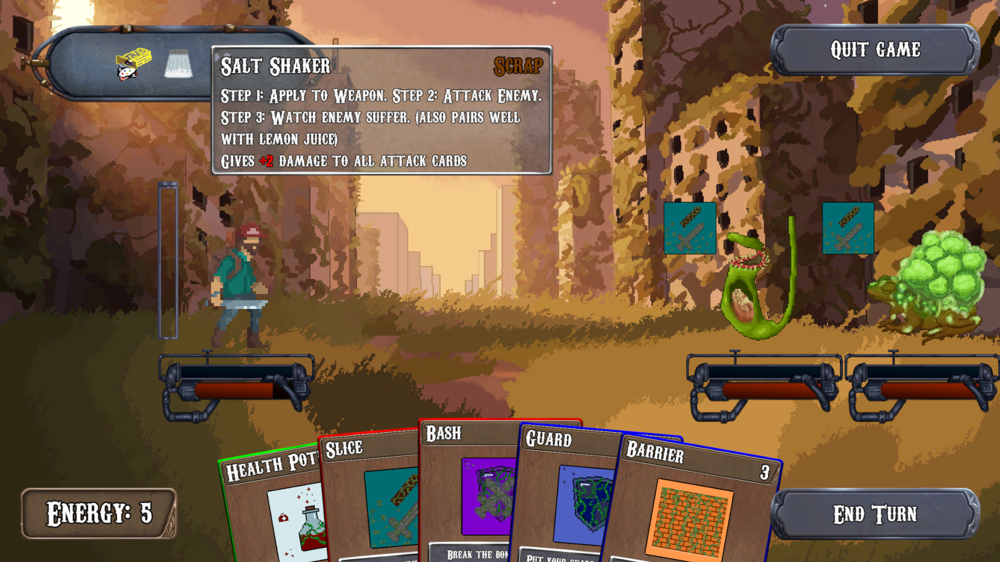

A post-apocalyptic roguelike cardgame
"Geiger//Counter" is a 2D pixel-art game inspired by slay the spire developed by a group of 5 people. You fight monsters by playing cards, upgrade by collecting various relics and explore a randomly generated map so each run is different.

During the development of Geiger//Counter, I worked as the SCRUM master of our team and worked mostly on the follow features: